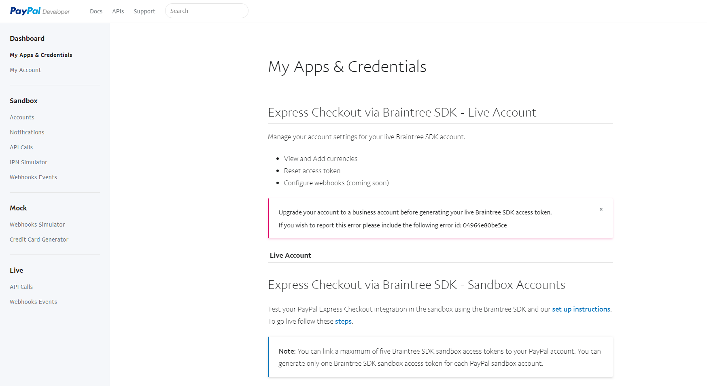
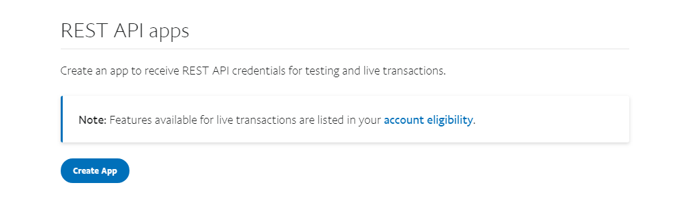

Making API calls to Paypal servers require an Access Token. To get it, you need to get your credentials. To get them follow these steps:
- Go to Paypal's developer site
- Log into dashboard with the developer account you created
- Click on “My Apps & Credentials” under Dashboard

- Scroll down to REST API apps, and create a new one by clicking on “Create App” Button

- Choose a name and click “Create App”
- Now you can see your credentials (Client Id and secret)
Note: Credentials are unique for each application
Note 2: Your existing apps will appear under Create App button for you to manage.
|